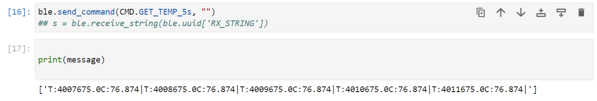

In order to communicate with the Artemis board wirelessly later on for debugging or data collection,
I needed to establish bluetooth communication. Lab 2's goal
was to use jupyter lab and Arduino together to establish communications between the Artemis and my computer. By completing each lab task,
I showed that I could use bluetooth to send real-time sensor data and error reports.
SETUP
Prior to coming into lab, I needed to prepare the software that would be used. Because I already had python3, all I had to do was install pip by copying and
pasting the following into command prompt:
python3 -m pip install --user virtualenv
In order to create the new virtual environment I then typed:
python3 -m venv FastRobots_ble
This created a new virtual environment that I could use to run python scripts after activating it by typing:
>.\FastRobots_ble\Scripts\activate
>jupyter lab
After that, I installed the codebase that was required and the ArduinoBLE library. The codebase had all the python sketches I needed
in order to understand how to connect with the Artemis. The config file connection.yaml would hold the
important identifiers like UUID and MAC addresses that would be used by the class ArtemisBLEController to send data and
execute commands on the arduino that I would implement. These commands would be sent to the Artemis along with a string as data.
The board could then do whatever with the information and send back another string.
CONFIGURATION
By burning the ble_arduino.ino script into the microcontroller I was able to find my MAC address
and get started. I decided to create a Unique Universal Identifier (UUID) to ensure I was the only one that could connect to it.
To do this I opened a terminal in jupyter lab and typed:
from uuid import uuid4
uuid4()
I then replaced all given UUID's with the one I'd just generated.
To first make sure everything was set up correctly, I ran each cell in the demo.ipynb file in the codebase.
Here is a quick video showing that all went well and I could continue with the presented tasks.
ECHO
In order to communicate, the Artemis board must be able to send and modify strings. In order to accomplish this,
I created a new command called ECHO. This command simply appended an incoming string with a smiley face to show its approval.
" :D"
Below you can see the results.
GET_TIME_MILLIS
The next test was to create a command to receive a timestamp. This would be useful for understanding collected sensor data.
There will always be small delays between sending and receiving signals, so timestamping information is crucial.
In order to capture timestamps I utilized the Arduino function millis(). By casting the output of that function into a float
I was able to create a string format as seen below to send data to the user.
NOTIFICATION HANDLER
Waiting for a string to be sent by the Artemis can be a timely endeavor that slows down the main control loop.
To avoid this, I define a notification handler that takes in incoming data into an expanding list.
Below is the python code I used to define the handler and a video example of the output.
GET_TEMP_5s
By applying the notification handler, we can now timestamp collected sensor data. To do this, I implement the function
GET_TEMP_5s. This function collects five timestamped temperature readings one second apart and sends it to my computer.
Below is the code I implemented to do that and an example output.

GET_TEMP_5s_RAPID
The next step in the lab was to send timestamped temperature readings much faster. In the future, sensor readings need
to keep up with the fast pace of the robot. Taking that many readings proposes a lot of challenges.
For instance, there's still a 151 character limit on the string sent through bluetooth.
To get around this, we can store temperature and time readings into an array stored locally on the Artemis.
This means we can send large stores of data in small segments. Below is the code I used to implement this command and
example outputs.
TASK 6
The final task assigned addresses a problem encountered with the last: how many readings can we take before we run out
of memory? If we decided to use the entirety of the Artemis’s RAM to store raw data, we would be able to store 96,000 float data points (384,000 bytes and 4 bytes per float).
If we divide by two, we get the total number of complete data points we can store (accounting for both Time and Temperature)
giving us a final value of 48,000 data points that can be stored in ram before running out of memory.
However, this doesn’t account for the string that must be stored to send the data in the first place.
18 characters are needed to represent one data entry in string format, meaning we can send 8 data points at a time and must
reserve 144 bytes to store the string. Recalculating the previous data point limit while accounting for this string doesn’t
change the value much (47,982 complete time and temperature data points as opposed to 48,000), but gives a more accurate estimate.
Let’s take a look at 5 seconds of 16-bit values taken at 150 Hz. This will give us 750 values or 1,500 bytes of data.
Knowing that 383,856 bytes are available in dynamic memory (accounting for the 144-byte string necessary for communication),
I calculate that we can store approximately 256 times the amount of data that was proposed before the Artemis runs out of memory.
CONCLUSION
Bluetooth communication is a useful tool that will be utilized in future labs to debug and communicate data.
By following the careful and helpful lab instructions, I've learned how to use jupyter lab and Arduino in conjunction
for this purpose as shown by the completion of the previously assigned tasks.